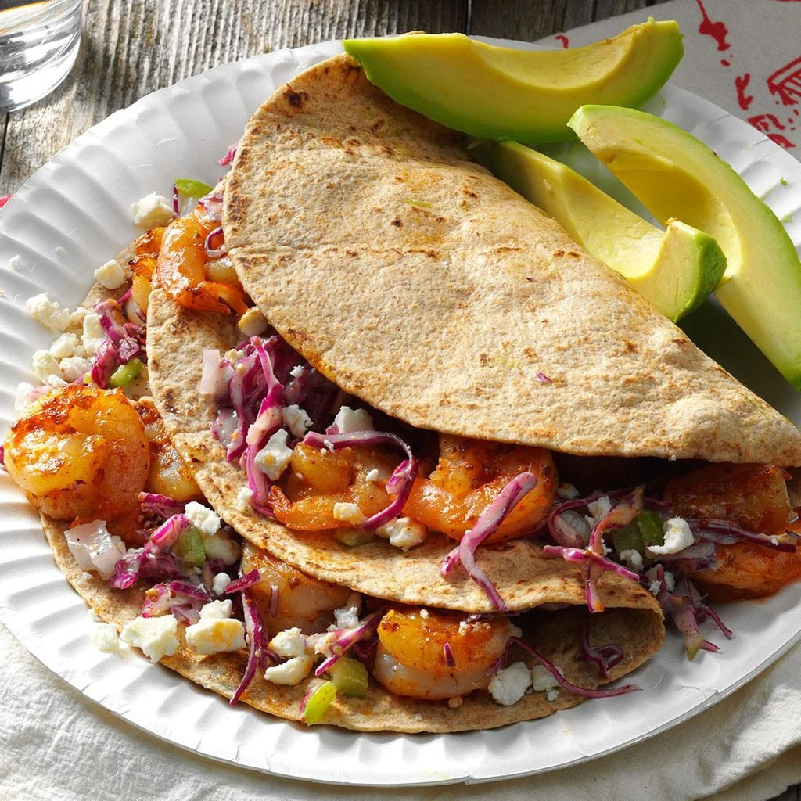
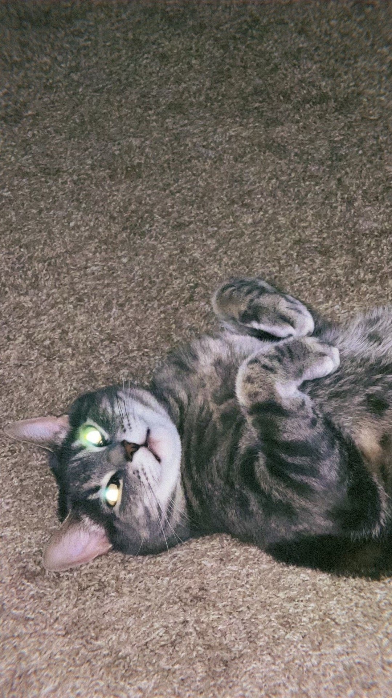

Shrimp Tacos

Ingredients
- 1/4 cup Miracle Whip Light or reduced-fat mayonnaise
- 1 tablespoon cider vinegar
- 1 tablespoon stone-ground mustard
- 1/4 teaspoon pepper
- 2 cups shredded red cabbage
- 1/4 cup finely chopped sweet onion
- 1 banana pepper, finely chopped
- 1 pound uncooked shrimp (31-40 per pound), peeled and deveined
- 1 tablespoon reduced-sodium taco seasoning
- 1 tablespoon olive oil
- 8 whole wheat tortillas (8 inches), warmed
- 1/2 cup crumbled feta cheese
- Sliced avocado, optional
Directions
- In a bowl, mix Miracle Whip, vinegar, mustard and pepper. Add cabbage, onion and banana pepper; toss to coat. Refrigerate until serving.
- Toss shrimp with taco seasoning. In a large nonstick skillet, heat oil over medium-high heat. Add shrimp; cook and stir 3-4 minutes or until shrimp turn pink. Serve in tortillas; top with slaw, cheese and, if desired, avocado.
